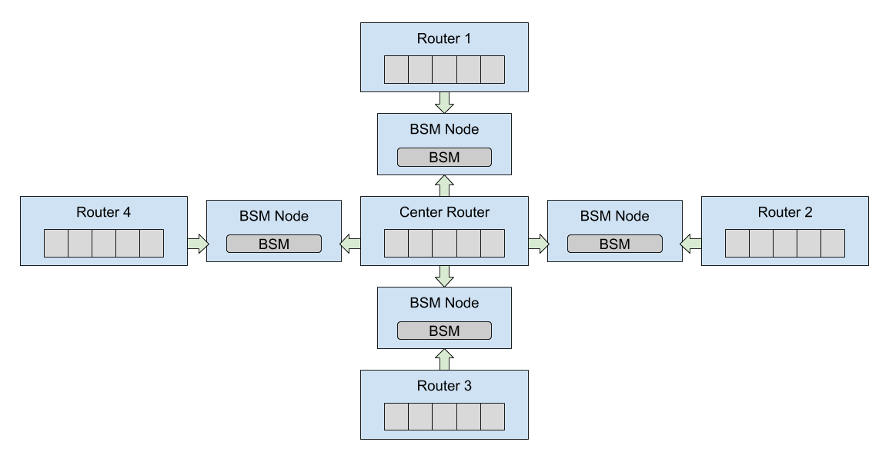
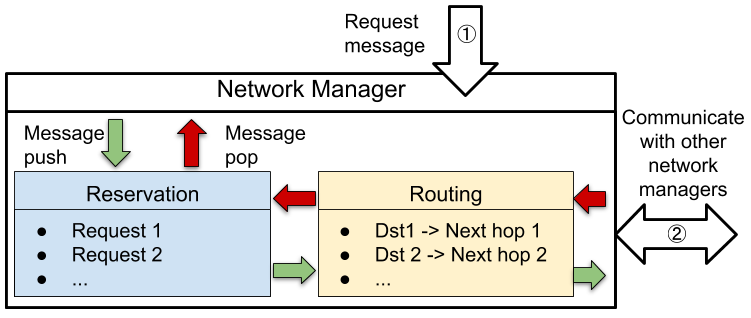

Chapter 5: Network Manager¶
In this tutorial, we will showcase the Network Management module of SeQUeNCe and show its operation on a typical network. The goal of this tutorial is to
Gain familiarity with the
network_managementmoduleGain familiarity with the
topology.topologymodule, includingUsing external files to build networks
To achieve this, we will be using an example json file to build our network and will use the network manager on QuantumRouter nodes to request entanglement pairs. The json file will create the network topology shown below:

This example is similar to the example jupyter notebook script random_request_network.ipynb, without applications and with slightly different parameters. The notebook can be viewed in the example directory of the SeQUeNCe download, including already written code and interactive input.
Background¶
The Network Management module of sequence is responsible for coordinating the protocols of network nodes, ensuring the proper and efficient completion of application requests. This is done with an internal protocol stack, as shown below:

When a request is received, the network manager with first push a message to the reservation protocol, which determines if the request can be met on the local node. If so, the protocol reserves hardware resources and passes the request to the routing protocol, which determines the next router in an optimal path between the requested nodes (this optimal path is determined when building the topology by finding the shortest quantum connection path between nodes). Nodes in the path receive reservation requests and either reserve local resources or reject the request. If rejected on any node or accepted by all nodes, the request is sent back to the originating node by the reverse path. If accepted, appropriate rules are automatically generated and installed in the resource manager as well.
When constructing the network manager, the NewNetworkManager function of the sequence.network_management.network_manager module is used. This function will automatically create the default reservation and routing protocol stack and install it into the network manager.
def NewNetworkManager(owner: "QuantumRouter") -> "NetworkManager":
manager = NetworkManager(owner, [])
routing = StaticRoutingProtocol(owner, owner.name + ".StaticRoutingProtocol", {})
rsvp = ResourceReservationProtocol(owner, owner.name + ".RSVP")
routing.upper_protocols.append(rsvp)
rsvp.lower_protocols.append(routing)
manager.load_stack([routing, rsvp])
return manager
Step 1: Create the Network Configuration File¶
For this example, we will be using a json file to specify the nodes and connectivity of the network. The json file should be structured as a dictionary with the following keys:
is_parallel, denoting if it’s a parallel or sequential simulationstop_time, the stop time of simulationnodes, giving a list of node specifications,One of the following:
qchannels, giving a list of quantum channel specifications,qconnections, giving a list of two-way quantum connection specifications, and
One of the following:
cchannels, giving a list of classical channel specifications (similar toqchannels)cconnections, giving a list of two-way classical connection specifications
For this simulation, we use sequential simulation to simulate 2 seconds of the network.
"is_parallel": false,
"stop_time": 2000000000000
Next, we will make the nodes entry.
All fields of the list will have the name field required by the node constructor and a specification of the node type,
along with any more arguments (optional or not) specified by the specific node type.
We will be using the QuantumRouter node type for this tutorial,
which already includes all of the necessary hardware for entanglement distribution as well as all necessary modules (including network management).
The seed attribute denotes the random seed used for the random number generator on the node,
which can guarantee the reproducibility of the simulation.
The memo_size attribute defines the size of the memory array on the quantum router.
"nodes": [
{
"name": "center",
"type": "QuantumRouter",
"seed": 0,
"memo_size": 50
},
{
"name": "end1",
"type": "QuantumRouter",
"seed": 1
"memo_size": 50,
},
{
"name": "end2",
"type": "QuantumRouter",
"seed": 2
"memo_size": 50,
},
{
"name": "end3",
"type": "QuantumRouter",
"seed": 3
"memo_size": 50,
},
{
"name": "end4",
"type": "QuantumRouter",
"seed": 4
"memo_size": 50,
}
]
The qconnections entry should have multiple entries specifying the name of the two connected nodes and at least the attenuation and length of the fiber
(plus any additional keyword arguments).
The type of quantum connection should be specified by the attribute type.
Here, we use the predefined type meet_in_the_middle that automatically generates a BSM node in the middle of node1 and node2.
"qconnections": [
{
"node1": "center",
"node2": "end1",
"attenuation": 0.0002,
"distance": 500,
"type": "meet_in_the_middle"
},
{
"node1": "center",
"node2": "end2",
"attenuation": 0.0002,
"distance": 500,
"type": "meet_in_the_middle"
},
{
"node1": "center",
"node2": "end3",
"attenuation": 0.0002,
"distance": 500,
"type": "meet_in_the_middle"
},
{
"node1": "center",
"node2": "end4",
"attenuation": 0.0002,
"distance": 500,
"type": "meet_in_the_middle"
}
]
Finally, for the classical channels, we will specify two-way cconnections.
The node endpoints are specified by name as node1 and node2, and each communication direction will have the same delay delay.
"cconnections": [
{
"node1": "center",
"node2": "end1",
"delay": 500000000
},
{
"node1": "center",
"node2": "end2",
"delay": 500000000
},
{
"node1": "center",
"node2": "end3",
"delay": 500000000
},
{
"node1": "center",
"node2": "end4",
"delay": 500000000
},
{
"node1": "end1",
"node2": "end2",
"delay": 1000000000
},
{
"node1": "end1",
"node2": "end3",
"delay": 1000000000
},
{
"node1": "end1",
"node2": "end4",
"delay": 1000000000
},
{
"node1": "end2",
"node2": "end3",
"delay": 1000000000
},
{
"node1": "end2",
"node2": "end4",
"delay": 1000000000
},
{
"node1": "end3",
"node2": "end4",
"delay": 1000000000
}
]
Step 2: Build the Network¶
Now, we can move to our script and begin building the experiment from our json file.
The json file can be loaded with the construction function of RouterNetTopo.
Note that we have the json file saved as star_network.json here.
The RouterNetTopo will also create a timeline with 2 seconds of simulation time.
We use the function get_timeline() to get the timeline for the simulation.
from sequence.topology.router_net_topo import RouterNetTopo
network_config = "star_network2.json"
network_topo = RouterNetTopo(network_config)
tl = network_topo.get_timeline()
To edit network parameters quickly, we can define a custom function to interact with the topology. This function will take one argument:
topology, theRouterNetTopoobject we wish to update.
We will edit a few hardware objects by accessing the hardware fields of network nodes. To access all nodes of a specific type in the network, we can use the topology.get_nodes_by_type method. This is useful for editing hardware objects that may only be found on one node type, e.g. memories only found on QuantumRouter nodes.
We may also wish to edit parameters of our entanglement protocols. Since these are created by a node’s resource manager, we will need to edit the appropriate fields of the resource manager on each node. This is achieved in much the same way as hardware elements.
For quantum and classical connections, the get_qchannels and get_cchannels functions of the topology will return a list of quantum channels and classical channels, respectively.
These provide an iterable list of all connections in the network that may be edited directly.
def set_parameters(topology: RouterNetTopo):
# set memory parameters
MEMO_FREQ = 2e3
MEMO_EXPIRE = 0
MEMO_EFFICIENCY = 1
MEMO_FIDELITY = 0.9349367588934053
for node in topology.get_nodes_by_type(RouterNetTopo.QUANTUM_ROUTER):
memory_array = node.get_components_by_type("MemoryArray")[0]
memory_array.update_memory_params("frequency", MEMO_FREQ)
memory_array.update_memory_params("coherence_time", MEMO_EXPIRE)
memory_array.update_memory_params("efficiency", MEMO_EFFICIENCY)
memory_array.update_memory_params("raw_fidelity", MEMO_FIDELITY)
# set detector parameters
DETECTOR_EFFICIENCY = 0.9
DETECTOR_COUNT_RATE = 5e7
DETECTOR_RESOLUTION = 100
for node in topology.get_nodes_by_type(RouterNetTopo.BSM_NODE):
bsm = node.get_components_by_type("SingleAtomBSM")[0]
bsm.update_detectors_params("efficiency", DETECTOR_EFFICIENCY)
bsm.update_detectors_params("count_rate", DETECTOR_COUNT_RATE)
bsm.update_detectors_params("time_resolution", DETECTOR_RESOLUTION)
# set entanglement swapping parameters
SWAP_SUCC_PROB = 0.90
SWAP_DEGRADATION = 0.99
for node in topology.get_nodes_by_type(RouterNetTopo.QUANTUM_ROUTER):
node.network_manager.protocol_stack[1].set_swapping_success_rate(SWAP_SUCC_PROB)
node.network_manager.protocol_stack[1].set_swapping_degradation(SWAP_DEGRADATION)
# set quantum channel parameters
ATTENUATION = 1e-5
QC_FREQ = 1e11
for qc in topology.get_qchannels():
qc.attenuation = ATTENUATION
qc.frequency = QC_FREQ
We can then insert this into our script and call our function with the network_topo object:
set_parameters(network_topo)
Step 3: Making Requests¶
With the network built, we are now ready to make requests of the network manager and start entanglement. The request method of the network manager can be used for this. When invoked, it will automatically start the reservation process and create rules as required (see the background section). The method has 5 arguments:
responder, a string name of the other node with which to generate entangled pairsstart_time, the simulation time (in picoseconds) at which entanglement should beginend_time, the simulation time at which entanglement may end and reserved resources releasedmemory_size, the number of entangled memory pairs requestedtarget_fidelity, the desired fidelity of entanglement for all pairs
We will make one request at one network node, asking for 25 memories to be entangled starting at 1 second and ending at 2 seconds (the end of our simulation). At the end of the simulation we will print out the entanglement state of memories in a manner similar to chapter 4.
# the start and end nodes may be edited as desired
start_node_name = "end1"
end_node_name = "end2"
node1 = node2 = None
for router in network_topo.get_nodes_by_type(RouterNetTopo.QUANTUM_ROUTER):
if router.name == start_node_name:
node1 = router
elif router.name == end_node_name:
node2 = router
nm = node1.network_manager
nm.request(start_node_name, start_time=1e12, end_time=10e12, memory_size=25, target_fidelity=0.9)
tl.init()
tl.run()
print(node1, "memories")
print("Index:\tEntangled Node:\tFidelity:\tEntanglement Time:")
for info in node1.resource_manager.memory_manager:
print("{:6}\t{:15}\t{:9}\t{}".format(str(info.index),
str(info.remote_node),
str(info.fidelity),
str(info.entangle_time * 1e-12)))
We should notice that all memories are entangled with the specified distant node, that they have fidelity above our specified threshold, and that the entangled time is between 1 and 2 seconds.